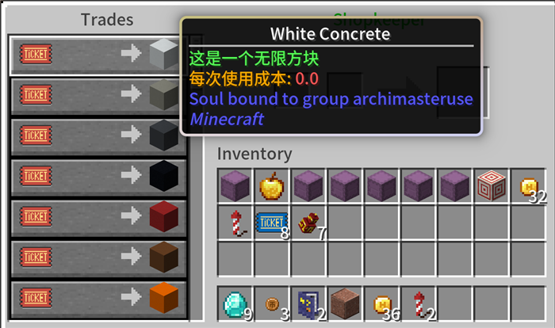

Loading header...
无限方块插件
即使是在这样高度工业化的服务器，建筑材料也完全不够用！无限方块插件很好地缓解了这一矛盾。

建筑师协会售卖的无限方块
指令一览
无
功能介绍
放置无限方块后，服务器会向你发送一个同样的无限方块，以此达到“无限”的效果。
无限方块取之不尽，用之不竭——除非你在使用投影打印机mod。高速的方块放置和较高的网络延迟可能导致服务器来不及发送无限方块，让对应的物品槽位空置。此时如果你填满了背包，无限方块会积累在你的鼠标上（打开背包的时候，这些无限方块会跟随你的鼠标）。此时关闭背包会直接将无限方块扔出去，这是无限方块损耗的主要原因（次要原因是当成普通方块扔掉了）。
如果需要使用投影打印机mod，可以通持有更多无限方块来缓解。常用的方块根据网络延迟建议备有6个以上。同时，打印的时候建议持有九种以下的无限方块，减少因服务器延迟造成的错误方块放置。
目录